Como o modelo pensa e toma decisões
Separar dados parecidos
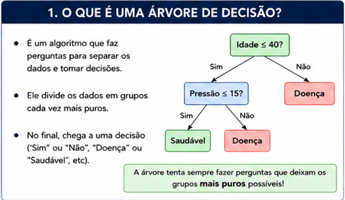
Puro → uma única classe
Impuro → mistura de classes
Objetivo: diminuir a impureza
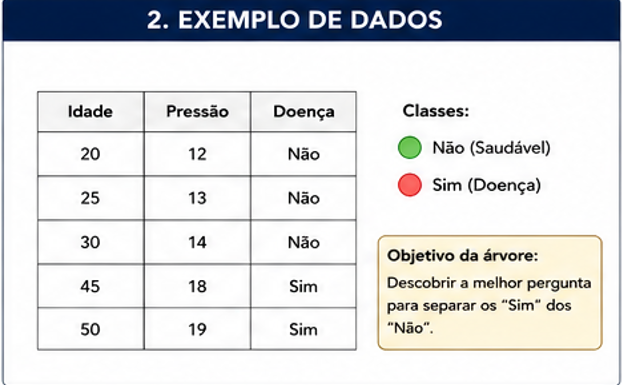
Árvore faz perguntas para dividir os dados
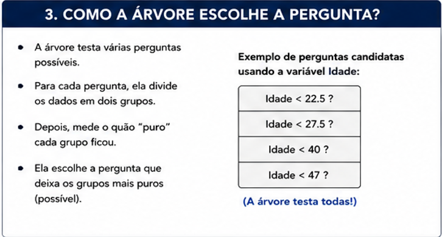
Árvore testa várias perguntas
Escolhe a que deixa os dados mais puros
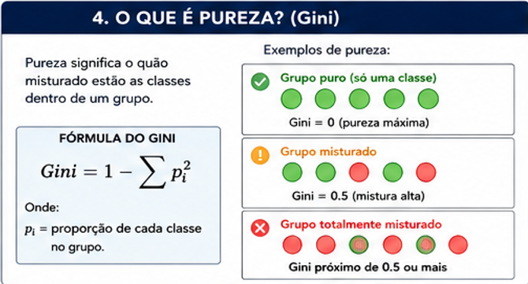
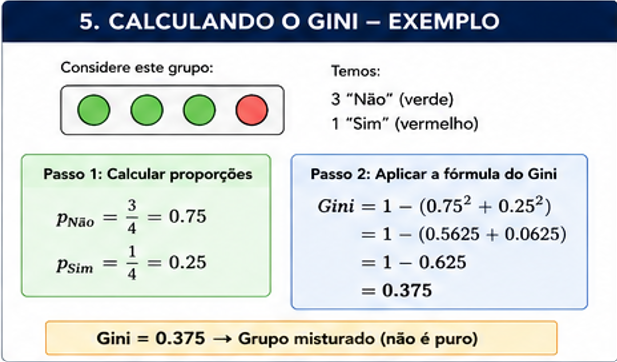
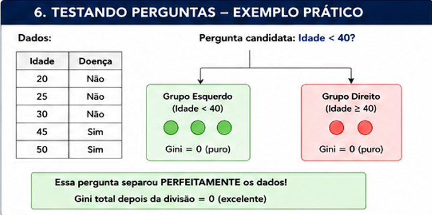
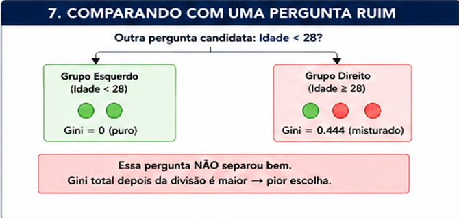
Calcula o ganho de informação
Escolhe a pergunta com maior ganho
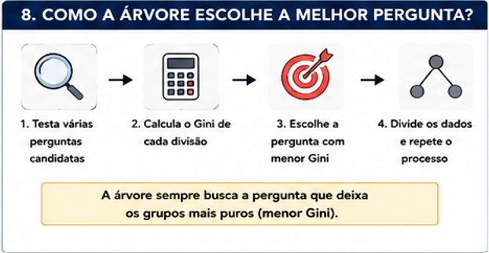
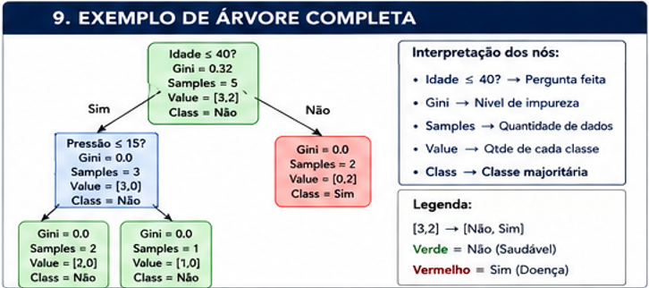
Gini: mede a impureza
Entropia: mede a desordem
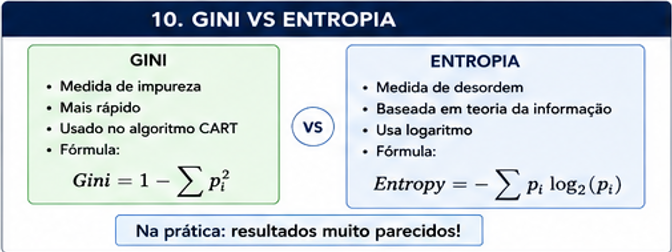
criterion: gini / entropy
max_depth: profundidade
min_samples_split: mínimo para dividir
min_samples_leaf: mínimo na folha
Modelo decora os dados
Erra dados novos
Solução: limitar a árvore
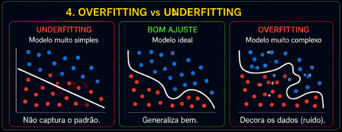
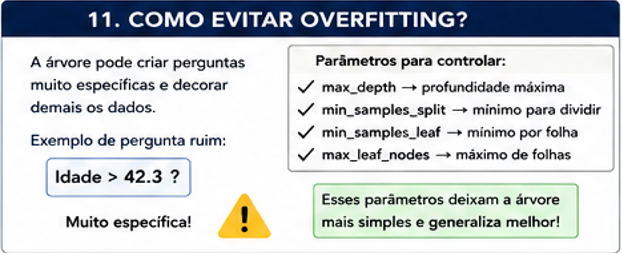
KNN → usa distância
Decision Tree → cria regras
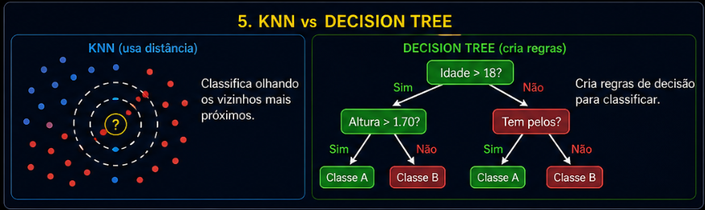
A árvore aprende fazendo perguntas e dividindo os dados até deixá-los organizados.
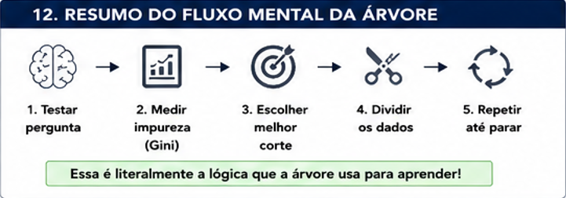
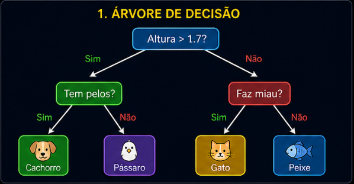
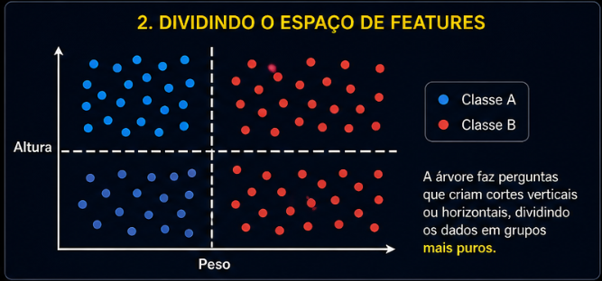
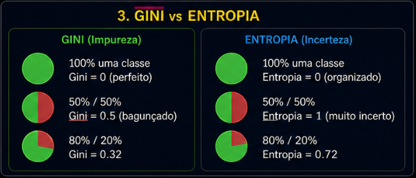